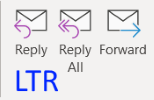
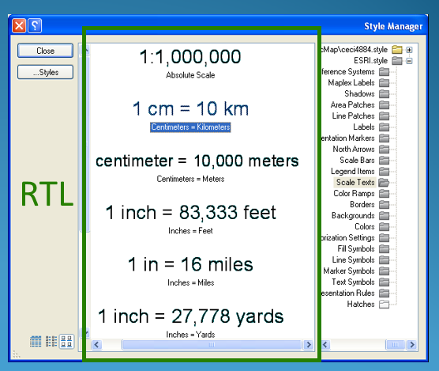
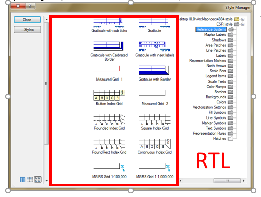
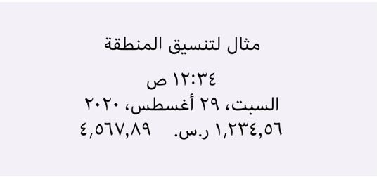
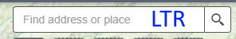
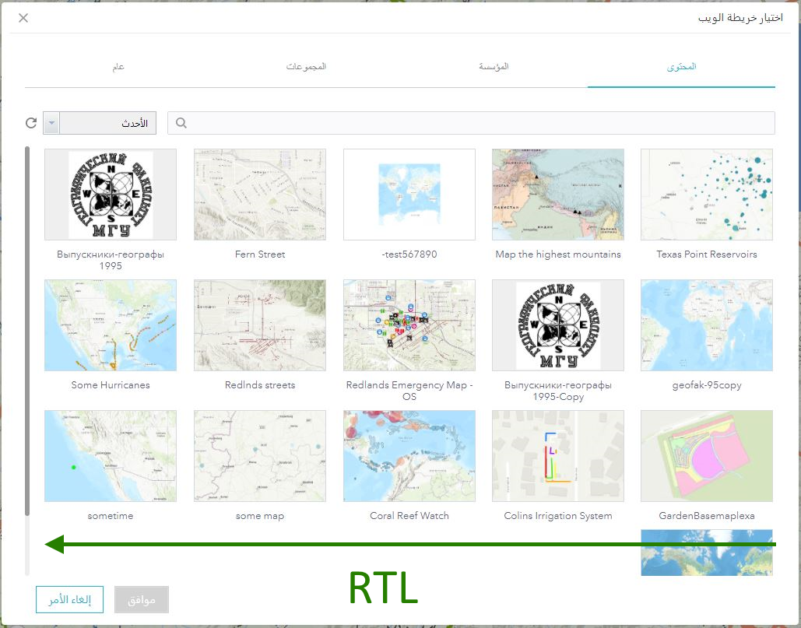

Arabic and Hebrew languages are native to more than 600 million people in developing economies. Arabic language is native for over 295 million people, plus it is used by 1.6 billion Muslims worldwide. There are over 5 million Hebrew native speakers all over the world. Also, there are over 310 million people who speak one of ten major languages based on the Arabic script and writing system: Farsi (Persian), Urdu, Dari, Pashto, Uyghur, Sindhi, Malay (Jawi), Kazakh, Kurdish, and Kyrgyz. In this article we will focus mostly on Arabic (Ar) and Hebrew (He), those are languages already supported by Esri software.
Arabic speaking countries
Arabic was just a small language several years ago used on internet. In 2015, it did not feature even in the top ten languages used on the internet, but has grown to become one of the most used languages online. As of 2013, only 37% of Arabic speakers were connected to the internet, but today there are more than 168.1 million Arabic internet users worldwide. The language just misses out on the top three spots, but it can change in near future.
Top 10 languages used on the Internet today
Text written in the Hebrew and Arabic languages is often referred to as bidirectional, or "BiDi" for short. Arabic and Hebrew are written predominantly right-to-left. Numbers are written with the most significant digit left-most, just as in European or other left-to-right text.
European flow of numbers and words (everything from left to right)
Same text in Arabic. Flow of numbers and words (words go from right to left; numbers go from left to right)
Languages written in left-to-right scripts are often mixed in, so the complete document is bidirectional in nature, a mix of both right-to-left and left-to-right writing.
Text says: The following new tools are available in the ArcGIS Enterprise portal
BiDi languages pretty much never go vertical. The only intuitive way to achieve vertical BiDi script is to start with a standard line of horizontal RTL text and rotate it 90 degrees counterclockwise so that it points downward.
Reading right-to-left means the whole experience — not just the line of text — is right-to-left. Books are alphabetized on a shelf RTL. Books open from what Westerners would consider the back cover. A sequence of instructional steps must go in RTL direction.
The order of characters in memory (logical) is not the same as the order in which they are displayed (visual). The set of rules applied by the software to produce the correct order at the time of display are described by the Unicode Bidirectional Algorithm, or 'bidi algorithm' for short.
How does the software know whether this is a sequence of left-to-right or right-to-left characters? Because each character in Unicode has an associated directional property. Most letters are strongly typed as LTR (left-to-right). Letters from right-to-left scripts are strongly typed as RTL (right-to-left).
The order in which text is displayed depends on the base direction assigned to the phrase, paragraph or block that contains it.
Spaces and punctuation are not strongly typed as either LTR or RTL, because they may be used in either type of script. They are therefore classed as neutral or weak characters. A neutral character between two strongly typed characters that have the same directional type will also assume that directionality.
More information about Strong & Weak characters can be found in Unicode Bidirectional Algorithm basics
“?” should be flipped in AR-only.
“%” goes left side from the number in Arabic and Turkish (%100), not in Hebrew (100%)
BiDi scripts are inherently cursive, which means that each BiDi script has multiple letter forms, depending whether it’s used at the start, middle, or end of the word — and there’s a standalone (detached) form. Hebrew has only five letters with both a normal form and a final form. In Arabic script, certain letters can only connect with other letters on the right side, but not the left. This creates slight breaks in the script flow that are subtly smaller than breaks between words.
Arabic letters - example of character shapes depending upon the position
Hebrew letters - example of character shapes depending upon the position
Arabic letters can also take different shapes, or ligatures, depending on the other letters around them. The letters are combined, or “stacked” in different ways, based on which letters are being written.
Here’s an example of the name “Muhammad” written out fully, followed by the preferred ligature form
Both Hebrew and Arabic alphabets have 24 characters. Please note that some characters should be written differently depending on their position in the word (beginning, middle, end and stand-alone). Sometimes browsers like IE11 and Edge display Arabic text as disjoined characters, it is a bug.
Learn more about Hebrew alphabet
Learn more about Arabic alphabet
The Arabic-Indic numerals are decimal based numbers used in Arabic and Farsi speaking countries. They are one of the oldest sets of numerals still in use today, though the Western Arabic system used in European languages has become dominant in recent centuries. Although Arabic text is written right-to-left, numbers are written the same way as in left-to-right languages, with the most significant digit on the left. The number 123 (one hundred and twenty three) is written ١٢٣ ("123", not "321").
Western and Indic Arabic numerals
“Indic” are used in some, but not all Arabic-speaking countries. ArcGIS Pro supports both 'Western' and 'Indic' numerals. Mobile applications are re-using numerals from the system settings. Currently web applications are supposed to display only Western numerals. Some browsers are displaying a mixture of 'Western' and 'Indic' numbers, it is better to avoid such behavior.
Hebrew calendar types:
Hebrew calendar also called Jewish calendar, is a lunisolar calendar used today predominantly for Jewish religious observances. It determines the dates for Jewish holidays and the appropriate public reading of Torah portions, and daily Psalm readings, among many ceremonial uses. In Israel, it is used for religious purposes, provides a time frame for agriculture and is an official calendar for civil purposes, although the latter usage has been steadily declining in favor of the Gregorian calendar.
Examples of short/long days of the week and months - to be added
Main Arabic calendar types:
Hijri (Islamic) calendar is based on the moon. Also known as the Hijri Calendar, it started after the Hijrah of the Prophet (PBUH) to Madina. The beginning of each month is contingent on the visibility of the moon at the end of the previous month. Once the moon is sighted, the new month commences. Each month starts with a new lunar cycle. Hence, the Muslim Calendar gives only a tentative overview of the upcoming Islamic dates as the start of each month is subject to the sighting of the moon. The Islamic calendar consists of 12 months similar to the Gregorian calendar. However, it consists of 354-355 days unlike the 365-366 days in the regular calendar.
Examples of Arabic days of the week notation:
While web applications are currently using Gregorian calendar only, mobile applications are relying on system settings, more advanced applications like ArcGIS Pro can work with country-specific calendars.
Short cut to bring up your desktop regional setting: Run > intl.cpl
Setting Arabic (Saudi Arabia):
Below are quick videos explaining how to set your system to the required calendar:
Arrows are mirrored for an RTL layout, the meaning will be just the opposite. Therefore, we do not flip arrows but remember the following meaning:
An arrow that points to the left (green) represents the concept of going back.
An arrow that points to the right (gray) represents the concept of going forward to the next page.
Arrows meaning when Mirroring
The XY coordinates are written as in English (X, Y), but from left to right like this (Y ,X)
The negative sign follows the settings of the operating system.
The Lat Long coordinates are written as Long Lat (opposite to English), but because of the general RTL text direction Long appears at the beginning of the string at the right side and Lat appears at the end of the string at the left side
Note: Not all countries use N/S/E/W notation similar to English. In RU it is с.ш./ю.ш./в.д./з.д. Own abbreviations in native characters are widely used in TH, JA and many other countries with non-Latin alphabet. Countries where Arabic is used refer to the cardinal directions as Ash Shamaliyah (N), Al Gharbiyah (W), Ash Sharqiyah (E) and Al Janobiyah (S). Additionally, Al Wusta is used for the center. For instance, N is written in AR as ثوانی
Legends, ordered lists and unordered lists should be right-aligned, with bullets or patches at the right side. The same is true for icons. For a Numbered list icon, don't flip it, a special icon exists in Caltcite-components
An example of probably the most tricky symbology is displayed correctly in RTL:
The order of most UI elements should go in RTL direction in AR and HE UI. Dialog boxes should be flipped
While tools within their panels are following their LTR or RTL order, there is an exclusion. Widgets within the Map Frame are always positioned the same, no matter RTL or LTR.
*******************************************************
If you are not sure whether the arrow or any icons that should be mirror, check with other applications such as MS outlook, words, AutoCAD and Adobe to find out how others are doing in RTL.

Graphics should not be mirrored at all, such as legal trademarks or logos because they will make no sense when laid out from right to left. Images element especially all raster imageries should not be mirrored, otherwise, it will become useless and distorted. Text reading order in the graphics should honor LTR or RTL, it should not blindly mirror everything.
ESRI Style Scale bar with English Text

Incorrect and useless ESRI Style Grid reference system after mirroring.

Charts/Histograms should be like in English, except Hebrew/Arabic text reading order should be RTL and alignment should be to the right. Legend is neutral on the graph/chart, it does not has directional meaning, so the symbol can be on either size but the numeric value that contain greater than > or smaller than < (e.g. >1000, < 999) should honor LTR reading order
URLs, File paths and English text Keep them LTR. NP if they will be right-aligned. Sometimes English text with punctuation may look not very good in RTL layouts. While there is no way to control user-defined text (which may be typed in any language), it is better to control the punctuation in "Always English" text like product names. You can use LTR tags to prevent browsers will force them to follow the LTR standard. For example: Solutions: <option>ArcGIS Notebook Python 3 Standard (3.0)‎</option> <option dir="ltr">ArcGIS Notebook Python 3 Standard (3.0)</option> <option style="direction:ltr;">ArcGIS Notebook Python 3 Standard (3.0)</option>
Keep them LTR. NP if they will be right-aligned.
Sometimes English text with punctuation may look not very good in RTL layouts. While there is no way to control user-defined text (which may be typed in any language), it is better to control the punctuation in "Always English" text like product names. You can use LTR tags to prevent browsers will force them to follow the LTR standard. For example:
Solutions:
That means that if, for instance, we have date in dd/mm/yyyy format, the result will be 2019/12/31. Please use DOJO library and don’t forget about RTL tags.
HTML, Python scripts, Dynamic text (e.g. XML) SQL statement and label expressions are standardize and they all remain LTR e.g. Dynamic text remain LTR
Select by Attribute – even though UI is RTL but the select statement should remain LTR.
Model builder flow direction should remain LTR
The azimuth point is the same in both dialogs, but the degrees number under the picture is different. The Altitude point, which "walks" on the curve, does not follow the curve in the Hebrew dialog.
/**************************/
After installing the MUI, restart the desktop, if you have LP installed, ArcGIS Desktop would be able to detect the registry and launch an Arabic Desktop. If you have set the editor permission, you can toggle the language in ArcGIS Administrator, select Arabic from the drop down and re-launch Desktop.
Detail workflow for set up can be found at VM and i18n machine set up.
File > Options > Language > Choose Display Language
Install Arabic/Hebrew Display language from Microsoft
Promote Arabic as default language and restart outlook
After your device updates the language, it should return to the Home screen and display the language you selected.
After your device updates the region, it should return to the list of languages
Regional format example can be seen at the bottom of Language and Region page

ArcGIS Online does not inherit language settings from the operation system. Different apps inherit language settings differently.
Language is inherited from the browser settings, or in some cases from Portal organization settings. It is a good practice to set organization settings matching the language of your target auditory.
Language is inherited from browser settings.
In Safari there is no way to set the language independent from the OS. On Apple machine, go to Settings – Language and set the desired language.
In Edge (Chromium), go to Settings – Language and set the desired language in the list. If you don’t see your language in the list, you can always add it. Don’t restart the browser as it will change all browser controls; just update the Settings tab and you will see all configurable apps opened in other tabs with the language you selected.
In FireFox, click Options – General – Language. Don’t change English (or other language) set in the first dropdown ‘Choose the languages used to display menus, messages and notifications from Firefox’. You need to click ‘Choose’ button for the ‘Choose your preferred language for displaying pages’ options and drag and drop Arabic or Hebrew to the top of the list. If you don’t see the desired language in the list, you can click Add to add it there.
In other browsers language settings are changed similarly.
Regardless of privileges, user can sign in to his AGOL or Portal organization, click the user icon it the upper right corner and click My Settings. At the General tab, under Language, number, and date format, please click Update and set the desired language. For some languages (in 2020 not Arabic or Hebrew) there is also an option to select Number and Date format.
We recommend to keep this My Settings tab opened and continue UI testing at a different tab. It will allow you to come back to your settings quickly and change the language if needed.
Strings which stay in English should be right aligned, as the rest of RTL strings
‘Back’ arrow should be mirrored (flipped) to follow RTL layout direction
Mixed order of RTL and LTR strings. He string should read “ממוצע 0 מ 5 ~ דיוק ה GPS 32.8 רגל”
Days of the week go to the wrong direction, first day of the week is incorrect
Direction button should follow RTL layout direction
Incorrect number order
submit point with an attachment on AR - error message is shown.
Items are not right-aligned properly in lists or legends
Search widget should stay in the same part of a map frame for all languages, but its components need to follow proper direction
Side panel position should respect the language direction
Pagination should respect the language direction
The order of items in galleries should respect the language direction
Examples are vertial separators between windows, right-align and left-align buttons.
Here is a "bad example" when cursor is moving one side and vertical separator is moving opposite side. Avoid such behavior!
Please ensure and test manually that if a tool has an arrow showing left side, it should move the element the same side as shown at the icon: